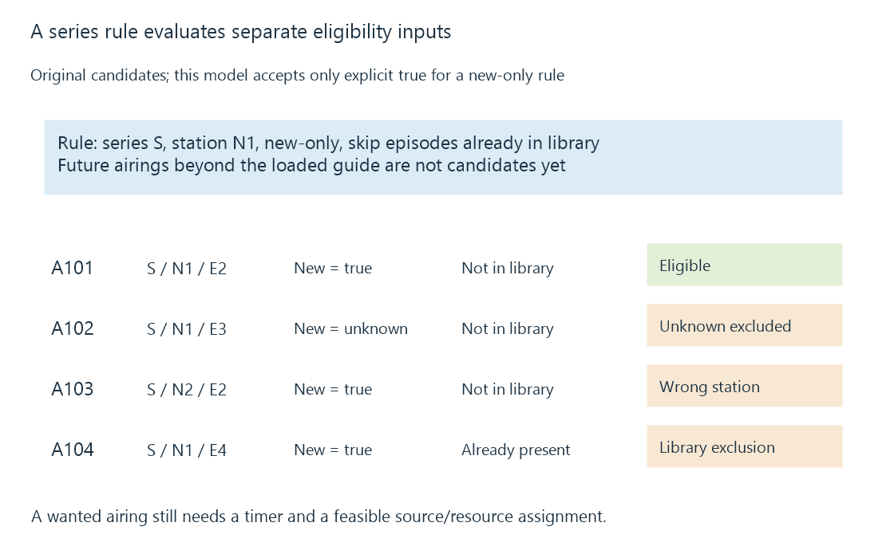

Series recording rules and future airings
A series recording rule retains matching and retention preferences for a series, producing individual recording requests as eligible airings become available in the guide.
A viewer chooses “Record series” because they want future episodes without creating every timer manually. The saved intent must therefore outlive the currently visible guide.
A series recording rule describes which future airings are wanted. Individual timers represent the concrete recordings produced from that rule and the schedule currently known.
The rule survives the guide horizon
Suppose an original series, Harbour Stories, has two airings in this week’s loaded guide. Creating two timers covers only those entries.
A persistent rule can also select next week’s matching airings after they are supplied and loaded. Before that happens, the rule can exist without timers for unknown future dates.
The absence of a timer beyond the guide horizon does not prove that the series rule was deleted. The programme information required to create that timer is not present yet.
Matching combines several conditions
Emby’s public series-timer reference exposes concepts such as series identity, days/time preferences, new-only recording, skipping episodes already in the library and keeping a limited number of recordings.
Those settings answer separate questions. Series membership selects the content family; channel/time conditions select eligible airings; new/repeat and existing-episode information can narrow that set further.
Here is a deliberately small candidate set for an original rule:
{
"rule": {"series": "S", "station": "N1", "newOnly": true, "skipInLibrary": true},
"airings": [
{"id": "A101", "series": "S", "station": "N1", "episode": "E2", "isNew": true, "inLibrary": false},
{"id": "A102", "series": "S", "station": "N1", "episode": "E3", "isNew": null, "inLibrary": false},
{"id": "A103", "series": "S", "station": "N2", "episode": "E2", "isNew": true, "inLibrary": false},
{"id": "A104", "series": "S", "station": "N1", "episode": "E4", "isNew": true, "inLibrary": true}
]
}
These keys are a teaching model. For this exercise only, new-only accepts an explicit true value; unknown new/repeat status does not pass that condition.
| Airing | Result under the declared rule |
|---|---|
| A101 | Eligible |
| A102 | New/repeat status unknown |
| A103 | Wrong selected station |
| A104 | Episode already marked present |
Changing the unknown-status policy can admit A102. Disabling the station restriction can admit A103. Turning off the existing-episode condition can admit A104.

A missing timer therefore needs its eligibility inputs inspected before being blamed on resource capacity. Conversely, passing the filter only establishes that the airing is wanted; it can still encounter a recording conflict.
“New” and “not recorded” mean different things
A guide’s new/repeat indicator describes the supplied airing metadata. A programme new to the viewer can be marked as a repeat.
The library check asks whether matching content is already present according to the implementation’s identity and library rules. That is separate from the broadcaster’s repeat classification.
A previous failed or partial capture adds another question: does the policy regard that item as sufficient existing content? Duplicate recording detection develops the confidence needed for that decision.
The same episode can also air on several stations or at several times. Selecting one eligible airing does not require treating the others as different episodes.
Keep the rule and its outcomes separate
A rule has a continuing lifetime; generated timers have individual intervals and statuses. Editing or deleting one timer can have different meaning from changing the persistent rule.
The application defines how exceptions, cancelled airings and later guide revisions affect that relationship. Inspect both the saved rule and the relevant generated timer when a single episode behaves unexpectedly.
Retention acts later still. It controls which captured artifacts remain, rather than deciding whether an airing belongs to the series in the first place.
See Also
- Programme identifiers: airings, episodes and series
- Duplicate recording detection and episode identity
- Recording timers and acquisition deadlines
- Recording retention and storage ownership